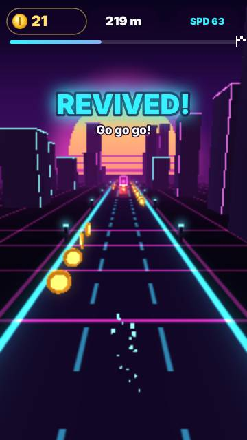
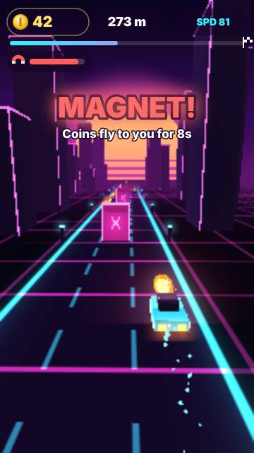

| time | saw | phase | planner | actions (with human reaction time) | notes | cost |
|---|
0:02.0
turn 1 |  |
tutorial
decider: tutorial 97%
clarity 98% |
sees: Tutorial prompt 'Swipe to switch lanes!' with blue car in center lane, pink block ahead in center, coins on left and right
progress: First turn |
0:03.6 swipe Swipe right to switch lanes, dodge center block, and collect coins (+1643 ms) |
3-lane synthwave runner. Swipe left/right to switch lanes. Dodge pink blocks, collect gold coins. | 3.1s
$0.0061 |
0:04.7
turn 2 |  |
gameplay
decider: gameplay 69%
clarity 80%
last input worked: 99% |
sees: 3-lane synthwave runner, car in right lane, NICE DODGE! text
progress: Swiped right, dodged pink block, collected 10 coins
reflex policy (zone 480,150,760,850): dodge_left — a pink block is in the same lane as the blue car and the lane to its left is empty; dodge_right — a pink block is in the same lane as the blue car and the lane to its right is empty; collect_left — gold coins are in the lane to the left of the blue car and there is no pink block in that lane; collect_right — gold coins are in the lane to the right of the blue car and there is no pink block in that lane
→ 15 checks, fired 2 (collect_right×1, dodge_left×1), ended by something_new |
0:05.0 swipe reflex collect_right (late): gold coins are in the lane to the right of the blue car and there is no pink block in that (+309 ms)
0:06.8 swipe reflex dodge_left: a pink block is in the same lane as the blue car and the lane to its left is empty (+255 ms) |
3-lane synthwave runner. Swipe left/right to switch lanes. Dodge pink blocks, collect gold coins. Using react for real-time dodging. | 5.2s
$0.0092 |
0:07.5
turn 3 |  |
tutorial
decider: tutorial 92%
clarity 96%
last input worked: 82% |
sees: Tutorial prompt: Swipe UP to jump! over an orange barrier across all 3 lanes
progress: Reached 104m and 10 coins; new hazard (orange barrier) introduced |
0:08.7 swipe Swipe up to jump over the orange barrier as instructed (+1202 ms) |
3-lane synthwave runner. Swipe left/right to switch lanes, swipe up to jump over orange barriers. Dodge pink blocks, collect gold coins. | 2.9s
$0.0057 |
0:09.7
turn 4 |  |
gameplay
decider: gameplay 72%
clarity 78%
last input worked: 100% |
sees: 3-lane synthwave runner gameplay, 'GREAT JUMP!' text, car in center lane
progress: Successfully jumped over the orange barrier
reflex policy (zone 420,100,780,900): jump_barrier — an orange barrier is in the same lane as the blue car; dodge_left — a pink block is in the same lane as the blue car and the lane to its left is empty; dodge_right — a pink block is in the same lane as the blue car and the lane to its right is empty; collect_left — gold coins are in the lane to the left of the blue car and there is no pink block or orange barrier in that lane; collect_right — gold coins are in the lane to the right of the blue car and there is no pink block or orange barrier in that lane
→ 5 checks, fired 2 (jump_barrier×2), ended by something_new |
0:10.0 swipe reflex jump_barrier: an orange barrier is in the same lane as the blue car (+236 ms)
0:10.9 swipe reflex jump_barrier: an orange barrier is in the same lane as the blue car (+247 ms) |
3-lane synthwave runner. Swipe left/right to switch lanes, swipe up to jump over orange barriers. Dodge pink blocks, collect gold coins. | 8.2s
$0.0099 |
0:11.5
turn 5 |  |
gameplay
decider: gameplay 98%
clarity 69%
last input worked: 94% |
sees: 3-lane synthwave runner, car in center lane, pink block ahead
progress: Jumped barriers, reached 155m and 17 coins
reflex policy (zone 420,150,700,850): jump_barrier — an orange barrier is in the same lane as the blue car; dodge_left — a pink block is in the same lane as the blue car and the lane to its left is empty; dodge_right — a pink block is in the same lane as the blue car and the lane to its left is blocked or the car is in the leftmost lane; collect_left — gold coins are in the lane to the left of the blue car and there is no pink block in that lane; collect_right — gold coins are in the lane to the right of the blue car and there is no pink block in that lane
→ 9 checks, fired 5 (dodge_right×4, collect_left×1), ended by duration |
0:11.7 swipe reflex dodge_right: a pink block is in the same lane as the blue car and the lane to its left is blocked or th (+230 ms)
0:12.7 swipe reflex dodge_right: a pink block is in the same lane as the blue car and the lane to its left is blocked or th (+253 ms)
0:13.4 swipe reflex collect_left (late): gold coins are in the lane to the left of the blue car and there is no pink block in that (+310 ms)
0:14.3 swipe reflex dodge_right: a pink block is in the same lane as the blue car and the lane to its left is blocked or th (+186 ms)
0:15.2 swipe reflex dodge_right (late): a pink block is in the same lane as the blue car and the lane to its left is blocked or th (+429 ms) |
3-lane synthwave runner. Swipe left/right to switch lanes, swipe up to jump over orange barriers. Dodge pink blocks, collect gold coins. | 5.5s
$0.0097 |
0:15.7
turn 6 |  |
fail
decider: fail 97%
clarity 90%
last input worked: 22% |
sees: CRASHED! Keep your run going? popup with REVIVE (1 free) and No thanks buttons.
progress: Crashed at 209m (SPD 2) after a late dodge. |
0:17.0 tap “Revive and continue” tap REVIVE 1 free to continue the run (+1313 ms) |
3-lane synthwave runner. Swipe left/right to switch lanes, swipe up to jump over orange barriers. Dodge pink blocks, collect gold coins. Speed increases (SPD 2). Need to look further ahead in reflex zone. | 3.5s
$0.0065 |
0:17.9
turn 7 |  |
gameplay
decider: gameplay 84%
clarity 87%
last input worked: 100% |
sees: REVIVED! Go go go! 3-lane road with coins on left/right and obstacles far ahead
progress: Revived and back on the road at 219m, SPD 63
reflex policy (zone 450,150,880,850): jump_barrier — an orange barrier is in the same lane as the blue car; dodge_left — a pink block is in the same lane as the blue car and the lane to its left is empty; dodge_right — a pink block is in the same lane as the blue car and the lane to its left is blocked or the car is in the leftmost lane; collect_left — gold coins are in the lane to the left of the blue car and there is no pink block or orange barrier in that lane; collect_right — gold coins are in the lane to the right of the blue car and there is no pink block or orange barrier in that lane
→ 5 checks, fired 3 (collect_left×1, collect_right×2), ended by something_new |
0:18.3 swipe reflex collect_left (late): gold coins are in the lane to the left of the blue car and there is no pink block or orang (+376 ms)
0:19.1 swipe reflex collect_right: gold coins are in the lane to the right of the blue car and there is no pink block or oran (+318 ms)
0:19.9 swipe reflex collect_right: gold coins are in the lane to the right of the blue car and there is no pink block or oran (+251 ms) |
3-lane synthwave runner. Swipe left/right to switch lanes, swipe up to jump over orange barriers. Dodge pink blocks, collect gold coins. SPD 63, need zone [450,150,880,850] to react early enough. | 6.1s
$0.0101 |
0:20.5
turn 8 |  |
gameplay
decider: gameplay 85%
clarity 75%
last input worked: 98% |
sees: Gameplay at 273m, SPD 81, Magnet active
progress: Collected magnet power-up, coins flying to car automatically.
reflex policy (zone 450,150,880,850): jump_barrier — an orange barrier is in the same lane as the blue car; dodge_left — a pink block is in the same lane as the blue car and the lane to its left is empty; dodge_right — a pink block is in the same lane as the blue car and the lane to its left is blocked or the car is in the leftmost lane
→ 5 checks, fired 4 (dodge_left×1, dodge_right×3), ended by interrupted |
0:20.8 swipe reflex dodge_left: a pink block is in the same lane as the blue car and the lane to its left is empty (+317 ms)
0:21.5 swipe reflex dodge_right: a pink block is in the same lane as the blue car and the lane to its left is blocked or th (+178 ms)
0:22.3 swipe reflex dodge_right: a pink block is in the same lane as the blue car and the lane to its left is blocked or th (+191 ms)
0:23.0 swipe reflex dodge_right: a pink block is in the same lane as the blue car and the lane to its left is blocked or th (+253 ms) |
3-lane synthwave runner. Swipe left/right to switch lanes, swipe up to jump over orange barriers. Dodge pink blocks, collect gold coins. Magnet active for 8s, so focus on dodging. | 4.5s
$0.0082 |
0:23.4
turn 9 |  |
end_card
decider: fail 94%
clarity 32%
last input worked: 8% |
sees: Game Over screen with Play now button
progress: Crashed into a pink block, reached the end card |
0:26.2 tap “Play now” Tap Play now on the end card (+220 ms) |
3-lane synthwave runner. Swipe left/right to switch lanes, swipe up to jump. Crashed and reached the end card. | 2.6s
$0.0055 |